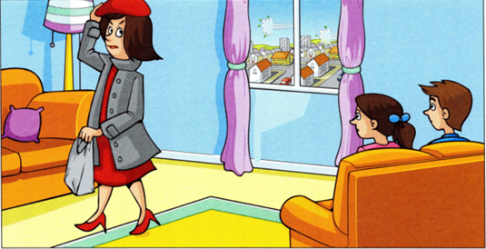
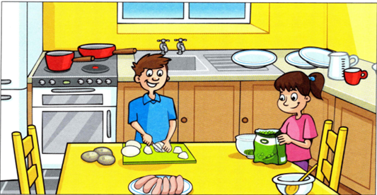
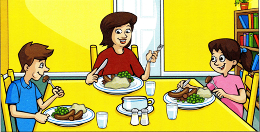

Part 5

Last Thursday was a cold and windy day. Lucy and Hugo were at home in their flat on the tenth floor. Their mum was a teacher at a music school. That day Mum had to go to the library after work.
Lucy said, ‘Let’s do something nice for Mum.’ ‘That’s a good idea,’ said Hugo. ‘She cooks for us every day, let’s cook for her today,’ Hugo said.

The children put their jackets on and went to the supermarket to buy the food they needed. They ran home to the flat and washed all the vegetables and started to cook.
Mum carried lots of books in her bag. She wasn't very strong and she had to walk slowly.

At the flat Mum walked into the hall and waited for the lift. It didn't come. ‘It’s not working,’ she thought. ‘I have to walk up the stairs to the flat!’ It wasn't easy.
When Mum opened the door of the flat, she was very surprised. Lucy and Hugo, who were near the table, said to her, ‘Come and have dinner. It’s sausages, potatoes and peas. Sit down and enjoy it, Mum!’ ‘This is great. Thank you,’ she said. She was very happy.